برقسان
صفحه اصلی در دسکتاپ و گوشی


بررسی ۱۰ سایت مرتبط با مدل کسبوکار تأمین و نمایندگی فروش کابل. هر ادعا به صفحه عمومی قابل مشاهده متصل است و تصاویر کامل صفحه اصلی برای مقایسه طراحی در دسترساند.
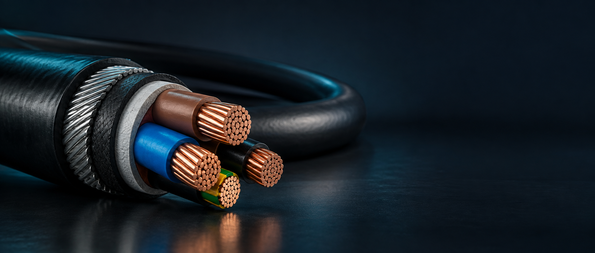
این گزارش قوت و خلأ مشاهدهشده، تصویر صفحه اصلی و منبع هر یافته را کنار هم میگذارد. ۹ سایت تصویر دارند؛ درباره سایتی که بررسی مستقیم آن ممکن نبود، ارزیابی سئو و طراحی ارائه نشده است.
عدد ۱۰، اندازه کل بازار یا تعداد قطعی رقبای مستقیم نیست؛ این فهرست نمونهای از سایتهای مرتبط است.
برای کابل صنعتی، ولتا تدبیر و مانیاد صنعت؛ برای کابل شبکه، رایا ارتباط نیروانا و لگراندکو؛ و برای جستوجوهای عمومی، فروشگاههای بزرگ هم اهمیت دارند. فهرست برندها و SKUهای مشتری، نقشه رقابت نهایی را دقیق میکند.
مشتری تأمینکننده و نماینده فروش است و واردات دارد. تولیدکنندگان داخلی فقط هنگام همپوشانی کالا، پروژه یا عبارت جستوجو در رقابت مستقیم قرار میگیرند.
صفحه اصلی، دستهبندی، نمونه محصول/محتوا و مسیر استعلام یا خرید سایتهای مرتبط بررسی شد. برای صفحات غیرقابل بازشدن از نتیجه ایندکسشده یا فهرست رسمی استفاده شد.
ترافیک، رتبه واقعی، بکلینک، نرخ تبدیل، Core Web Vitals و وضعیت کامل ایندکس اندازهگیری نشدهاند. تصویر تمامصفحه ۹ سایت در دسکتاپ و موبایل ثبت شد؛ چلیپا کابل خطای گواهی HTTPS داشت.
از ۹ سایت، ۱۸ تصویر تمامصفحه ثبت شد. در هر کارت، تصویر را داخل قاب اسکرول کنید و با پیوندهای زیر آن به تحلیل سئو، طراحی و استعلام همان رقیب بروید.
صفحه اصلی در دسکتاپ و گوشی

صفحه اصلی در دسکتاپ و گوشی
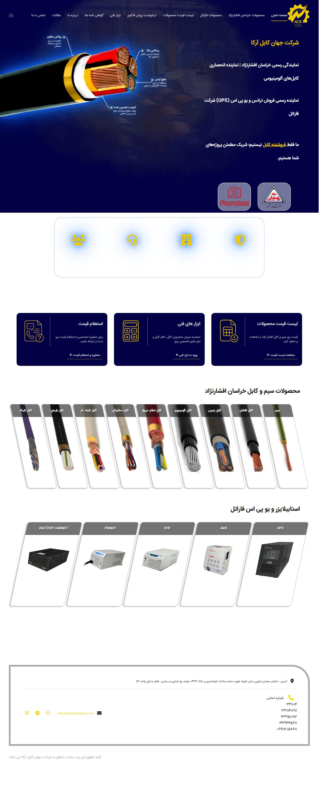
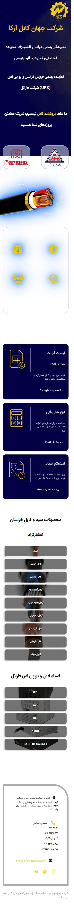
تصویر صفحه خانه قابل ثبت نبود
صفحه اصلی در دسکتاپ و گوشی

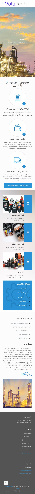
صفحه اصلی در دسکتاپ و گوشی
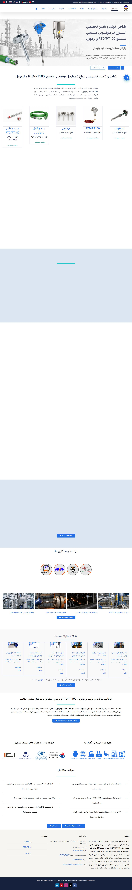

صفحه اصلی در دسکتاپ و گوشی
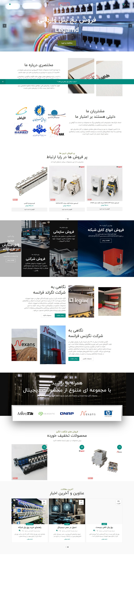
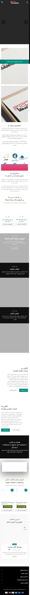
صفحه اصلی در دسکتاپ و گوشی

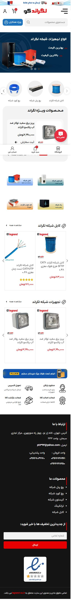
صفحه اصلی در دسکتاپ و گوشی


صفحه اصلی در دسکتاپ و گوشی
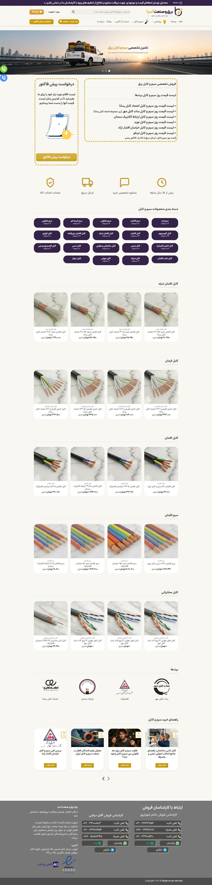
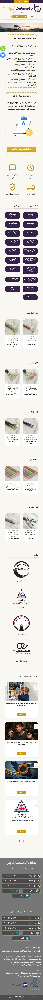
صفحه اصلی در دسکتاپ و گوشی
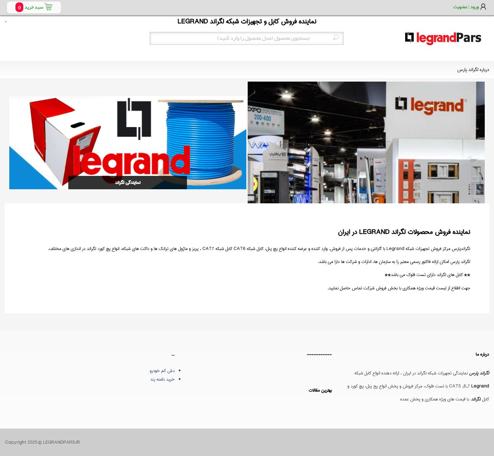
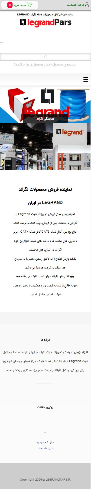
ثبت تصاویر: ۲۷ سپتامبر ۲۰۲۶. عرض مرورگر دسکتاپ ۱۴۴۰ پیکسل و نمای گوشی ۳۹۰ پیکسل بوده است. محتوای پویا ممکن است هنگام مراجعه بعدی تفاوت داشته باشد.
فیلتر کنید و قوت و خلأ مستند هر سایت را ببینید. یادداشتهای سئو، طراحی و استعلام بر مشاهدات همین گزارش تکیه دارند و جای ممیزی فنی یا سنجش رتبه را نمیگیرند.
تأمینکننده چند برند؛ رقیب جدی در محصول، قیمت و جذب استعلام.
دستهبندی گسترده، دیتاشیت و جدول فنی در صفحه محصول، فهرست قیمت و فرم پیشفاکتور.
اقلام RFQ در یک متن آزاد گرفته میشوند. در نمونه محصول ۱٫۵، دیدگاهی درباره سیم ارت ۲٫۵ درج شده است.
صفحه محصولِ بررسیشده جدول فنی و دیتاشیت دارد؛ رتبه و سئوی فنی سنجیده نشده است.
دستهبندی گسترده و فهرست قیمت، مسیر مرور کالا را نشان میدهد.
فرم پیشفاکتور موجود است، اما اقلام درخواست در یک متن آزاد وارد میشوند.
نماینده افشارنژاد و فاراتل؛ مهم در کابل داخلی و پروژههای همپوشان.
صفحات مشخصات فنی مفصل، ابزار محاسبه، فهرست قیمت و لینک استعلام در صفحه اصلی.
متن قابلخزش صفحه اصلی شامل email@example.com و شمارندههای ۰ است؛ نمونه محصول با Super User و تاریخ ویرایش ۱۴۰۲ دیده شد.
مشخصات فنی مفصل دارد؛ متن صفحه اصلی شامل نشانی نمونه و شمارندههای صفر است.
ابزار محاسبه و قیمت در دسترساند؛ دادههای نمونه در صفحه اصلی به بازبینی نیاز دارند.
لینک استعلام از صفحه اصلی دیده میشود؛ مسیر چندقلمی بررسی نشده است.
نماینده افشارنژاد و شاهین؛ معرفیشده در کابلهای تخصصی.
حضور در فهرست نمایندگان سازنده و معرفی کابل شیلددار، زرهدار، ابزار دقیق و نسوز.
منابع مختلف به دامنههای .com و .ir ارجاع میدهند؛ سایت مستقل با ابزار حاضر قابل بررسی نبود. درباره ظاهر یا سئوی آن حکم قطعی نداریم.
سایت مستقل قابل بررسی نبود؛ ارزیابی سئو ممکن نیست.
تصویر صفحه و مسیر کاربر ثبت نشده است.
حضور در فهرست نمایندگان سازنده تأیید شده؛ جریان استعلام سایت بررسی نشده است.
تأمین کابل خاص و برندهای خارجی برای صنعت نفت، گاز و پتروشیمی.
ذکر BELDEN، DRAKA، NEXANS، LEONI، LAPP و گروههای کابل خاص در صفحه اصلی.
در صفحه بررسیشده مسیر روشن جستوجوی پارتنامبر، مقایسه مدلها و RFQ پروژهای دیده نشد.
نام برندها و گروههای کابل خاص در صفحه اصلی دیده میشود؛ سئوی فنی سنجیده نشده است.
مسیر روشن جستوجوی پارتنامبر و مقایسه مدل در صفحه بررسیشده دیده نشد.
RFQ پروژهای روشن در صفحه بررسیشده دیده نشد.
کابل ابزار دقیق، کنترل و LAPP؛ معیار مهم برای پروژههای تخصصی.
شاخههای تخصصی، صفحات LAPP، گواهی، پروژه، کاتالوگ و چند زبان.
ناوبری عمیق است؛ CTA استعلام نمونه محصول برجسته نیست و یک واحد فنی باید با دیتاشیت سازنده بازبینی شود.
صفحات LAPP، پروژه و کاتالوگ دارد؛ یک واحد فنی باید با دیتاشیت تطبیق داده شود.
ناوبری عمیق است و رسیدن سریع به مدل میتواند سادهتر شود.
دکمه استعلام در نمونه محصول بررسیشده برجسته نیست.
واردات Legrand و Nexans؛ فروش خرد و عمده تجهیزات شبکه.
بیان روشن مدل واردات، صفحات کالا با پارتنامبر، ویژگی و قیمت متری.
خود شرکت به مسئله کالای تقلبی اشاره میکند؛ نمایش مدارک راستیآزمایی هر محموله برای مشتری مزیت است.
صفحه کالا پارتنامبر و ویژگی دارد؛ رتبه و سئوی فنی سنجیده نشده است.
مدل واردات و قیمت متری در صفحات بررسیشده روشن بیان شده است.
مدارک راستیآزمایی هر محموله میتواند به دغدغه کالای تقلبی پاسخ دهد.
فروش تخصصی کابل شبکه لگراند با صفحات دسته، محصول و مقاله.
دسته حاوی مدلها، قیمت، توضیح و FAQ؛ صفحات محصول با مشخصات CAT6 و LSZH.
پیام پیشفرض انگلیسی ووکامرس در متن ایندکسشده دیده میشود؛ تمایز مدلهای نزدیک نیاز به مقایسه روشن دارد.
دسته و محصول، توضیح و FAQ دارند؛ متن پیشفرض انگلیسی ووکامرس در محتوای ایندکسشده دیده میشود.
مقایسه روشن تفاوت مدلهای نزدیک، مسیر انتخاب را بهتر میکند.
قیمت نمایش داده میشود؛ مسیر استعلام پروژهای در این بررسی ارزیابی نشده است.
فروشگاه گسترده سیم، کابل و شبکه؛ رقیب عبارتهای خرید عمومی.
دستهبندی بر پایه برند، CAT، روکش، جنس هادی و محیط نصب با قیمت و مشخصات کوتاه.
تمرکز عمیق روی چند خانواده وارداتی، مدرک اصالت و پاسخ فنی B2B میتواند جایگاه اختصاصی بسازد.
دستهبندی بر پایه برند، CAT و مشخصات، ورودیهای محتوایی متنوع میسازد؛ رتبه سنجیده نشده است.
فیلترهای گسترده برای مرور سبد عمومی دیده میشود.
برای پروژه B2B، اصالت مدل و پاسخ فنی میتواند نقطه تمایز باشد.
فروشگاه چندبرندی با صدها محصول و درخواست پیشفاکتور.
فهرست بزرگ کالا، دستههای توضیحدار و CTA پیشفاکتور بالای فروشگاه.
در فهرست، واحد «تومان/متری» برای کیستون، پچکورد و پچپنل هم دیده میشود؛ شفافیت واحد فروش اهمیت دارد.
دستههای توضیحدار دارد؛ سئوی فنی و رتبه سنجیده نشده است.
فهرست بزرگ کالا و دکمه پیشفاکتور در بالای فروشگاه دیده میشود.
واحد «تومان/متری» برای چند قلم غیرمتری هم دیده شده؛ واحد فروش باید روشن باشد.
فروش همکاری، تجهیزات شبکه لگراند و جستوجوی مدل.
واردات، تست فلوک، فاکتور رسمی و فروش همکاری را در صفحه اصلی مطرح میکند.
صفحه اصلی کوتاه است و زیر «بهترین مقالات» لینکهای نامرتبط با کابل دیده میشود.
لینکهای نامرتبط با کابل زیر «بهترین مقالات» صفحه اصلی دیده میشود.
صفحه اصلی کوتاه است؛ مسیر محتوایی محدود دیده میشود.
واردات، تست فلوک، فاکتور رسمی و فروش همکاری در صفحه اصلی مطرح شدهاند.
توجه: برچسب اهمیت، برآورد راهبردی بر اساس مدل کسبوکار و محتوای قابل مشاهده است؛ رتبهبندی ترافیک یا سهم بازار نیست.
برند، پارتنامبر، عکس واقعی، مبدأ، دیتاشیت سازنده، مدارک تست قابل انتشار و تاریخ بازبینی برای هر مدل.
چند ردیف کالا با SKU و متراژ، مقصد، موعد تحویل، پیوست BOM/نقشه، تأیید دریافت و زمان پاسخ.
جستوجوی فارسی، لاتین و کد کالا؛ دستهبندی بر اساس کاربرد، برند و مشخصات فنی، با راهنمای انتخاب.
واحد، تاریخ و موجودی معتبر؛ در نبود قیمت قابل نگهداری، استعلام قیمت با زمان پاسخ مشخص.
جدول مقایسه، تفاوت استانداردها، سازگاری، حداقل سفارش و شرایط تحویل برای تصمیم مهندسی.
پروژههای قابل انتشار، فرآیند کنترل کیفیت، مستندات نمایندگی/واردات و معرفی تیم فنی.
برای مدلهای مهم صفحه مستقل و برای نیازهای پروژه، راهنمای انتخاب متصل به کالاهای واقعی.
وقتی مشتری یا تأمینکننده خارجی از سایت استفاده میکند، با داده فنی یکپارچه بین زبانها.